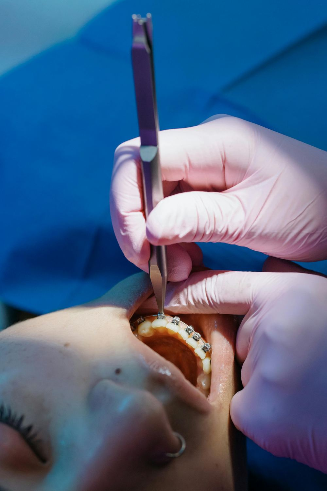

Consultório no Shopping da Ilha
Dentista ortodontista em São Luís
A Dra. Maria das Graças trata crianças e adultos com aparelhos fixos, ortopédicos e alinhadores, e faz clareamento e restaurações.

Tratamentos para crianças e adultos
- Ortodontia para adultos
Aparelhos autoligados, alinhadores e mini implantes.
- Ortodontia infantil
Avaliação cedo e aparelhos móveis ou fixos.
- Clareamento dental
No consultório ou em casa, com moldeira feita para você.
- Restaurações em resina
A cárie sai e a resina volta na cor do dente.
- Extração de dentes
Sisos e dentes com cárie extensa, com anestesia local.



Consultório no Centro Empresarial Shopping da Ilha
Muitos pacientes chegam com medo por causa de outros dentistas. Por isso explico cada passo antes de começar e respondo as dúvidas com calma.
Trabalho com ortodontia para crianças e adultos: aparelhos ortopédicos, fixos e alinhadores. O espaço é amplo e fica em Maranhão Novo, com dentistas parceiros para cirurgias, canal e implantes.
Maranhão Novo, São Luís

Avaliações de pacientes
“Parabéns pelo seu trabalho, em pensar que na minha infância eu morria de medo de dentista.”
“Ficou excelente o resultado. Dra., nota 1000.”
“Obrigado por me deixarem tão à vontade. Amei a conversa.”